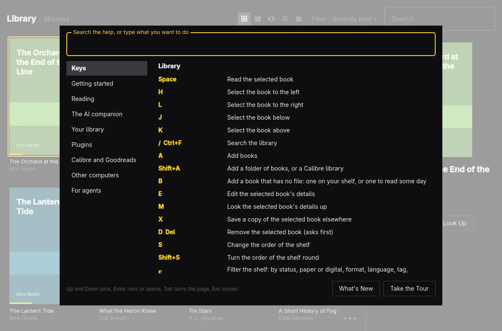

Shortcuts
These are the keys as shipped. Press ? or F1 in Omabook for the keys as bound on your computer, a plugin’s too. Change any in keys.json.

| Key | What it does |
|---|---|
| Space | Read the selected book |
| / | Search the shelf, or find in a book |
| 1–5 | Covers, spines, carousel, list, stacks |
| 6 | The library as a graph |
| T | Timelines |
| A | Ask the AI about what you are reading |
| C | Catch me up |
| W | Who is who so far |
| M | The map of the book so far |
| Y | Sync with another computer |
| P | Plugins |
| Ctrl+K | Change Omabook, anywhere |
| ? | Help: every key as bound now |
| Ctrl+M | Dictate, or say a command |
In a terminal: omabook help, omabook help keys, omabook help new. Nothing is the keyboard’s alone: the ⋯ in the header lists everything with its key, and a touchscreen works by tap, swipe and pinch.